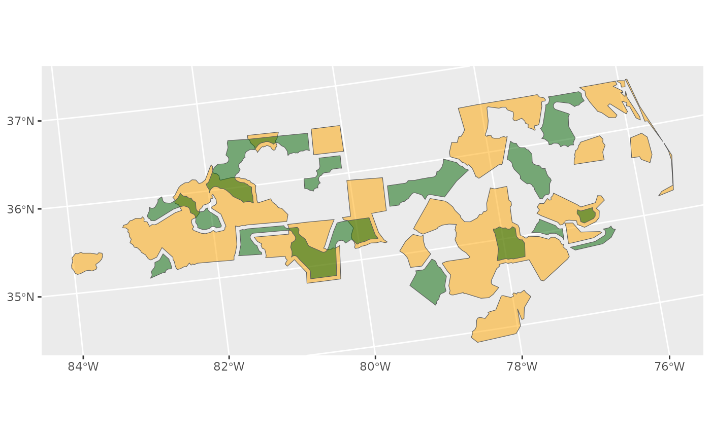
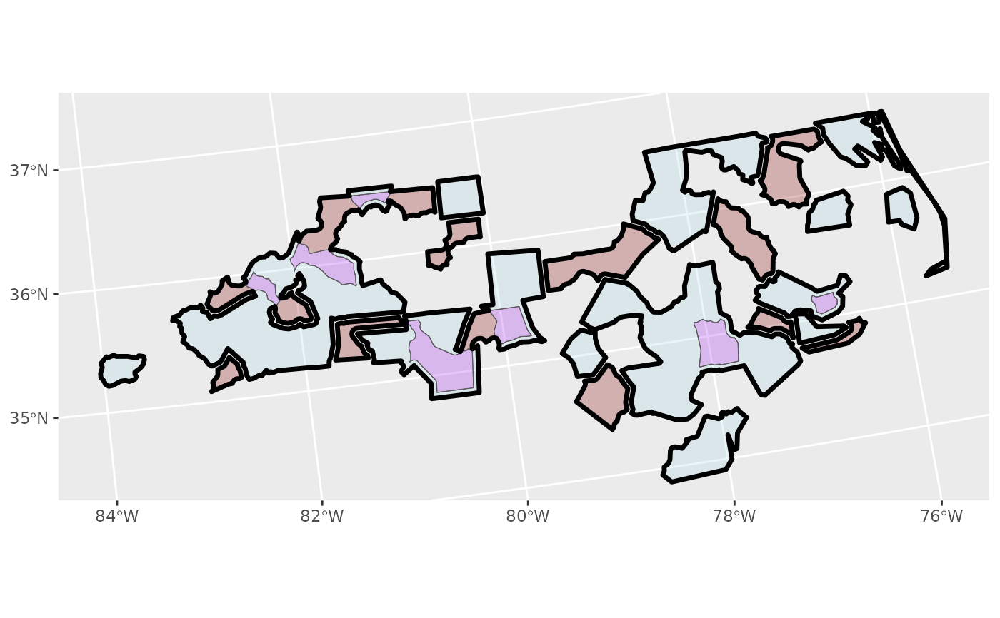

Emulate arcpy Union_analysis
st_union_analysis(x, y, union_by = NULL)sf::st_union modifies geometries and does retain attributes,
and for large datasets, avoiding Cartesian joins is essential to minimize RAM use.
nc <- system.file("shape/nc.shp", package = "sf") |>
sf::st_read(quiet = TRUE) |>
dplyr::select(NAME) |>
sf::st_transform("+proj=laea +lat_0=30 +lon_0=-95")
x <- nc[sample(1:nrow(nc), 40), ] |>
dplyr::mutate(seral = "old", .before = "geometry") |>
dplyr::group_by(seral) |>
dplyr::summarise() |>
sf::st_cast("POLYGON", warn = FALSE) |>
sf::st_set_agr("constant")
y <- nc[sample(1:nrow(nc), 30), ] |>
dplyr::mutate(seral = "mature", .before = "geometry") |>
dplyr::group_by(seral) |>
dplyr::summarise() |>
sf::st_buffer(-5000) |>
sf::st_cast("POLYGON", warn = FALSE) |>
sf::st_set_agr("constant")
ggplot2::ggplot() +
ggplot2::geom_sf(data = x, fill = "orange", alpha = 0.5) +
ggplot2::geom_sf(data = y, fill = "darkgreen", alpha = 0.5)

## uses attribute values from x for intersections
i <- sf::st_intersection(x, y) |>
sf::st_make_valid() |>
dplyr::select(-dplyr::ends_with(".1"))
dx <- sf::st_difference(x, sf::st_union(y))
dy <- sf::st_difference(y, sf::st_union(x))
u <- rbind(i, dx, dy) |>
dplyr::summarise()
identical(u, st_union_analysis(x, y))
#> [1] TRUE
ggplot2::ggplot() +
ggplot2::geom_sf(data = dx, fill = "lightblue", alpha = 0.25) +
ggplot2::geom_sf(data = dy, fill = "darkred", alpha = 0.25) +
ggplot2::geom_sf(data = i, fill = "purple", alpha = 0.25) +
ggplot2::geom_sf(data = u, fill = NA, col = "black", alpha = 0.25, linewidth = 1.2)
